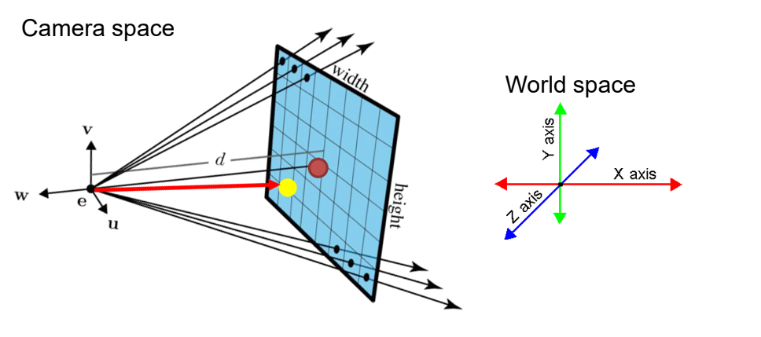
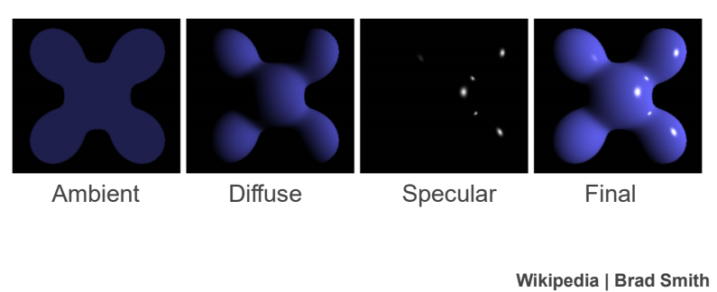

API Methods
Getting Started
To use JScene API, you need to download and reference JScene.js in the HTML file.
<script src="/path/to/JScene.js"></script>Add the HTML <canvas> tag, which will be our 3D viewport.
<canvas id="canvas"></canvas>Create a Scene object, then draw it to the canvas.
<script>
var canvas= document.getElementById('canvas');
var scene = new Scene();
var recur_depth = 5;//how many time lights can reflect between objects
render_canvas_native(canvas,scene,recur_depth);
</script>Scene/World Setting
The scene is a collection of Camera, Light, and Object; all of them come with a .name property. It becomes handy when we have UI to control the scene.
The objects that most related to the output of canvas are Camera and Lights. Therefore this section will introduce them.
var scene = new Scene();
scene.add_camera(/* Camera */);
scene.add_light(/* Light */);
//scene.add_object(/* Object */);Vector
Before discussing the actual object, I want to introduce the Vector type because it will appear in all places in this library.
Vector is an upgraded version of the array, which supports mathematics operations between vectors, such as addition, subtraction, multiplication, division, dot/cross product, and get magnitude/normalized. Vector is the internal data type of JScene, so you are unable to create the new Vector in the global scope.
//To manually change the XYZ value of Vector location
location.arr = [newX,newY,newZ];Camera
The camera represents the canvas's 'eye' in the scene. It includes the position, direction, aspect ratio, and focal length (or field of view, in first-person video games).
class Camera{
constructor(name='newCamera',location=[0,0,0],up=[0,1,0],front=[0,0,1]){
this.name = name;
this.location = new Vector(location);
this.up = new Vector(up);
this.front = new Vector(front);
this.side = this.up.cross3d(this.front).multiply_const(-1);
}
focal_length = 2.8;
width = 1.7778;
height = 1;
}var camera = new Camera();
camera.focal_length = 1.5;//set focal_length smaller = to make the field of view larger
camera.width = 1;
camera.height= 1;//make a square output| Property | Default | Type | Description |
|---|---|---|---|
| .name | 'newCamera' | String | Describe the current camera |
| .location | [0,0,0] | Vector | Location of the camera |
| .up | [0,1,0] | Vector | Up direction of the camera |
| .front | [0,0,1] | Vector | The direction that the camera faces |
| .side | [-1,0,0] | Vector | Right direction of the camera |
| .focal_length | 2.8 | number | The distance from a camera to its image plane |
| .width | 1.7778 | number | The width of the image plane |
| .height | 1 | number | The height of the image plane, together with width, define the aspect ratio of the image plane/output |
Light
If the Camera is a light receptor, then the Light is a light emitter. Without it, the Scene can only render a black image.
LightPoint defines lights launch from one point to all directions,
LightSun defines lights are all parallel directional light.
//LightSun and LightPoint share the same parent and constructor.
LightPoint(name='newLight',location=[0,1,0],color=[178,178,178]);
LightSun(name='newLight',location=[0,1,0],color=[178,178,178]);//in this case, the location means the directionvar bulb = new LightPoint('bulb',[0,1,0]);//light bulb at position y=1
var sun = new LightSun('sun',[0,1,0]);//sun with light y=1 as direction from light toward the scene.
bulb.set_color([0,255,0]);//changes the light of the bulb to red light
sun.set_color([0,0,25]);//changes the light of the sun to dark blue light
console.log(sun.color.arr);//[0,0,25]| Property | Default | Type | Description |
|---|---|---|---|
| .name | 'newLight' | String | Describe the light |
| .location | [0,1,0] | Vector | Location point if its LightPoint Direction from light toward the scene. if its LightSun |
| .color | [178,178,178] | Vector | Color of the light, by default RGB = [178,178,178] which is grey color, that means the color is white but not very bright |
Material
The Material can be placed on the object to define how this Object affects the reflected Light. The material contains four RGB colors: Ambient, Diffuse, Specular, Mirror Color and one Number is Phong exponent.
//Blinn-Phong Approximate Shading Material Parameters
Material(name='newMaterial',
ka=[51, 51, 51], //Ambient color
kd=[204,204,204], //Diffuse color
ks=[25,25,25], //Specular color
km=[25,25,25], //Mirror color
phong_exponent=20 //Phong exponent
);let Lambertian = new Material("grey non-metal",
[51, 51, 51],
[204, 204, 204],
[25,25,25],
[25,25,25],
20
);| Property | Default | Type | Description |
|---|---|---|---|
| .name | 'newMaterial' | String | Describe the material |
| .ka | [51,51,51] | Vector | Ambient color - ka will dye on the surface of the object that is not illuminated by light so that we can distinguish whether there is an object in a location without light |
| .kd | [204,204,204] | Vector | Diffuse color - Surface color |
| .ks | [25,25,25] | Vector | Specular color - The brightest spot on the object surface formed by the direct light reflection will be multiple by ks coefficient |
| .km | [25,25,25] | Vector | Mirror color - The brightness of km determines how reflective the object is, If km is closer to black, the reflection will be less visible. Pure black will cause the surface of the object not to reflect the image of other objects. The color of km is the coefficient of the reflected light, which affects the tone of the reflected color |
| .phong_exponent | 20 | Number | Phong exponent - Size of the light spot on the surface of the object |
| .ka_strength | 0.1 | Number | Set how bright ka is, and the range is between 0 and 1. |
Objects
Objects can receive and reflect light, and at the same time, affect the color of the reflected light, which follows our common sense.
JScene.js currently supports Plane, Sphere, and Triangle. It is worth mentioning that multiple Triangle can form most of the objects we need, which we call it TriangleSoup.
Plane
Use a point and a normal to define a boundaryless plane.
ObjectPlane(name='newPlane', location=[0,0,0],up=[0,0,0],material=new Material())var plane = new ObjectPlane('ground', [0,0,0], [0,1,0]);
plane.location.arr = [0,-1,0];//move plane lower, assume up is y = 1
plane.up.arr = [0,1,1];//tilt the plane| Property | Default | Type | Description |
|---|---|---|---|
| .name | 'newPlane' | String | Describe the plane |
| .location | [0,0,0] | Vector | Point on plane |
| .up | [0,0,0] | Vector | Normal of plane |
| .material | Lambertian | Material | Material of plane |
Sphere
Use position and radius to define a sphere.
ObjectSphere(name='newShpere',location=[0,0,0],size=1,material=new Material())var sphere = new ObjectSphere('sphere', [0,0,1], 1, Lambertian); //Lambertian defined in the Material section
sphere.location.arr = [0,0,900];//move the sphere farther from the world origin
sphere.size = 100;//make sphere larger by changing the radius to 2| Property | Default | Type | Description |
|---|---|---|---|
| .name | 'newShpere' | String | Describe the sphere |
| .location | [0,0,0] | Vector | Center of sphere |
| .size | 1 | Number | Radius of sphere |
| .material | Lambertian | Material | Material of sphere |
Triangle
Use three points to define a triangle.
//NO NAME: Triangles will not have a .name, because the meaning of the .name is to name each object
// in a UI controlled scene, but Triangle will only use as the data under TriangleSoup, so
// these Triangles should preferably share the same name.
//NO MATERIAL: Due to efficiency reasons and the use of Triangles, the Triangles will share the same
// material in the TriangleSoup.ObjectTriangle(corners=[[1,0,0],[0,1,0],[0,0,1]],normal)//You cannot directly put the triangle in the scene and render it because it has no material.
//The correct way to render the triangle is to put it in the triangle soup first,
//and then put the triangle soup into the scene
var trig1 = new ObjectTriangle([[0,0,2],[-2,0,1],[0,0,1]]);
//error: triangle corners overlap: [[0,0,0],[0,0,1],[0,0,1]]
var trig2 = new ObjectTriangle([[0,0,0],[0,0,1],[0,0,1]]);//default corners will apply to trig2| Property | Default | Type | Description |
|---|---|---|---|
| .corners | [[1,0,0],[0,1,0],[0,0,1]] | Array of Vectors | The three vertices of triangle |
| .up | [0.577,0.577,0.577] | Array |
normal is optional. If it is not giving, JScene.js will calculate one by using .corners. When we use file importing, STL will include the normal of each Triangle and this situation will bring efficiency improvements; .up is nother name for normal. Because triangles have front and back sides, normal can’t be accurate and express one of the sides, so it’s renamed .up |
TriangleSoup
A soup is just an Array of ObjectTriangle
ObjectTriangleSoup(triangles,material=new Material(),name='newSoup')var soup = new ObjectTriangleSoup([
new ObjectTriangle([[0,0,2],[2,0,1],[0,0,1]]),
new ObjectTriangle([[0,0,3],[0,0,2],[1,0,1]]),
new ObjectTriangle([[0,0,0],[0,0,1],[0,0,2]], [0,1,0])//manually setting .up
], Lambertian,'3 trig in 1 soup');| Property | Default | Type | Description |
|---|---|---|---|
| .name | 'newSoup' | String | Describe the triangle soup |
| .triangles | / | Array of Triangles | Fragment of triangle soup |
| .material | Lambertian | Material | Material of triangle soup |
File.stl -> TriangleSoup
STL "Standard Triangle Language": STL files describe only the surface geometry of a three-dimensional object without any representation of color, texture.
Currently, this library only supports Ascii .stl file. If you have a binary .stl file, you can convert it on this website STL Binary -> STL Ascii, then select output format: Ascii Stereolithography.
function parse_stl(ascii_STL_file);
//returns Array of [[Array,Array,Array],Array] repersent a triangle's corners and normal
function get_triangleSoup(vers_norm, material);
//returns ObjectTriangleSoup by taking parse_stl(ascii_STL_file)'s return and one material
const stl = document.getElementById("input_stl");
stl.addEventListener("change", handleFile, false);
function handleFile() { // after user choose a file
parse_stl(this.files[0]).then(data => { //takes first element from FileList
var soup = get_triangleSoup(data, Lambertian); // done!
});
}Functions
There are three more functions that can be accessed by the global scope, including two render functions and one cleanup function.
render_canvas_native(canvas,scene,num_reflect)
This function uses recursion to calculate each pixel's color and draw them on the canvas.
| Parameter | Default | Type | Description |
|---|---|---|---|
| canvas | Required | HTMLCanvasElement | Target canvas which we want to draw. |
| scene | Required | Scene | The scene contains created objects, and only these objects will participate in the pixel calculation. |
| num_reflect | Required | Number | An integer represents the number of times each light can be reflected in the scene. |
var canvas = document.getElementById('canvas');
var scene = new Scene();
render_canvas_native(canvas,scene,5);//go to the example page to see more complex casesrender_canvas_async(canvas,scene,tiles_w,tiles_h,num_reflect)
This function uses web worker and recursion to calculate each pixel's color asynchronously and draw them on the canvas, each sub-process will be responsible for the calculation of tiles_w * tiles_h pixels.
| Parameter | Default | Type | Description |
|---|---|---|---|
| canvas | Required | HTMLCanvasElement | Target canvas which we want to draw. |
| scene | Required | Scene | The scene contains created objects, and only these objects will participate in the pixel calculation. |
| tiles_w | Required | Number | The integer represents the maximum horizontal pixel value of the rectangle that each child thread is responsible for loading. |
| tiles_h | Required | Number | The integer represents the maximum vertical pixel value of the rectangle that each child thread is responsible for loading. |
| num_reflect | Required | Number | An integer represents the number of times each light can be reflected in the scene. |
var canvas = document.getElementById('canvas');
var scene = new Scene();
render_canvas_async(canvas,scene,128,128,5);//go to the example page to see more complex casesclear_canvas(canvas)
This function can efficiently clear the contents of the given canvas.
var canvas = document.getElementById('canvas');
clear_canvas(canvas); //the canvas should be empty nowNote About Stretched Output
Code below checks the resolution of canvas matches the aspect ratio of the camera, which causes stretch.
var canvas = document.getElementById('canvas');
var scene = new Scene();
if(canvas.height/canvas.width != scene.camera.height/scene.camera.width){
console.error('warning: aspect ratio does not match with resolution');
}